Ortholog Divergence Report
Input: IL26.valid.longest.fa · N sequences: 308 · Aligned length: 483 codons
Reference: Lepidothrix_coronata
Quick risk overview
- LOW: 0
- INTERMEDIATE: 0
- HIGH: 47278


Composition & complexity per sequence
Saved as per_sequence_composition.csv. High low-complexity or repeat content can reduce BLAST sensitivity due to soft masking.
| id | GC | GC skew | CpG dens. | AA LCR frac | NT repeat frac | AA len | CDS len |
|---|---|---|---|---|---|---|---|
| Lepidothrix_coronata | 0.42667 | -0.07812 | 0.02341 | 0.0 | 0.85667 | 100 | 300 |
| Caloenas_nicobarica | 0.41373 | -0.11848 | 0.01375 | 0.0 | 0.75882 | 170 | 510 |
| Ursus_americanus | 0.43665 | -0.00893 | 0.01953 | 0.17544 | 0.64327 | 171 | 513 |
| Melopsittacus_undulatus | 0.39947 | -0.0596 | 0.01061 | 0.12698 | 0.77249 | 126 | 378 |
| Sciurus_carolinensis | 0.41618 | 0.0 | 0.00965 | 0.09827 | 0.69171 | 173 | 519 |
| Gorilla_gorilla_gorilla | 0.38986 | 0.03 | 0.01172 | 0.09357 | 0.63938 | 171 | 513 |
| Hylobates_moloch | 0.38596 | 0.0101 | 0.01172 | 0.09357 | 0.62768 | 171 | 513 |
| Xenopus_tropicalis | 0.3581 | -0.01064 | 0.00763 | 0.07429 | 0.63619 | 175 | 525 |
| Sorex_fumeus | 0.38207 | 0.04082 | 0.01367 | 0.12281 | 0.65692 | 171 | 513 |
| Vidua_macroura | 0.41765 | -0.07042 | 0.00982 | 0.08824 | 0.75686 | 170 | 510 |
| Falco_biarmicus | 0.41373 | -0.07109 | 0.01965 | 0.0 | 0.7451 | 170 | 510 |
| Neomonachus_schauinslandi | 0.42495 | 0.01835 | 0.01367 | 0.19298 | 0.68421 | 171 | 513 |
| Anas_acuta | 0.39608 | -0.06931 | 0.00786 | 0.0 | 0.70588 | 170 | 510 |
| Mustela_erminea | 0.41326 | 0.00943 | 0.01562 | 0.09942 | 0.65887 | 171 | 513 |
| Bos_indicus_x_Bos_taurus | 0.39571 | 0.04433 | 0.01367 | 0.09942 | 0.66862 | 171 | 513 |
| Panthera_onca | 0.42056 | -0.01481 | 0.01872 | 0.07944 | 0.65265 | 214 | 642 |
| Corvus_cornix_cornix | 0.41569 | -0.07547 | 0.00982 | 0.08824 | 0.78824 | 170 | 510 |
| Rousettus_aegyptiacus | 0.38012 | 0.04615 | 0.00977 | 0.16959 | 0.68811 | 171 | 513 |
| Bison_bison_bison | 0.39571 | 0.04433 | 0.01367 | 0.09942 | 0.66862 | 171 | 513 |
| Symphalangus_syndactylus | 0.38596 | 0.0101 | 0.01172 | 0.09357 | 0.62768 | 171 | 513 |
| Chelonia_mydas | 0.38922 | -0.04615 | 0.012 | 0.07186 | 0.74251 | 167 | 501 |
| Zonotrichia_leucophrys_gambelii | 0.41765 | -0.07042 | 0.00589 | 0.08824 | 0.78039 | 170 | 510 |
| Apus_apus | 0.40588 | -0.12077 | 0.01179 | 0.0 | 0.79608 | 170 | 510 |
| Talpa_occidentalis | 0.40741 | -0.02392 | 0.01367 | 0.07018 | 0.66277 | 171 | 513 |
| Hyperolius_riggenbachi | 0.39116 | 0.10435 | 0.01704 | 0.06633 | 0.7381 | 196 | 588 |
| Camarhynchus_parvulus | 0.43537 | -0.07812 | 0.01024 | 0.0 | 0.82313 | 98 | 294 |
| Marmota_monax | 0.43566 | 0.11032 | 0.01087 | 0.06977 | 0.70543 | 215 | 645 |
| Saccopteryx_leptura | 0.4 | 0.02941 | 0.00786 | 0.1 | 0.70784 | 170 | 510 |
| Myotis_yumanensis | 0.39645 | -0.00498 | 0.00988 | 0.10059 | 0.70809 | 169 | 507 |
| Monodelphis_domestica | 0.39493 | 0.01835 | 0.00907 | 0.08152 | 0.65217 | 184 | 552 |
| Panthera_uncia | 0.40741 | 0.01435 | 0.01758 | 0.09942 | 0.66862 | 171 | 513 |
| Lagenorhynchus_albirostris | 0.39376 | 0.0 | 0.00977 | 0.10526 | 0.65497 | 171 | 513 |
| Bos_taurus | 0.39571 | 0.04433 | 0.01367 | 0.09942 | 0.66862 | 171 | 513 |
| Empidonax_traillii | 0.39947 | -0.09934 | 0.00265 | 0.0 | 0.77513 | 126 | 378 |
| Corvus_hawaiiensis | 0.41569 | -0.07547 | 0.00982 | 0.08824 | 0.78824 | 170 | 510 |
| Aptenodytes_forsteri | 0.43462 | -0.0339 | 0.01476 | 0.0 | 0.73112 | 181 | 543 |
| Halichoerus_grypus | 0.4308 | 0.03167 | 0.01758 | 0.18713 | 0.65302 | 171 | 513 |
| Molossus_molossus | 0.41131 | 0.04265 | 0.01953 | 0.0 | 0.64912 | 171 | 513 |
| Phocoena_sinus | 0.38986 | 0.01 | 0.00977 | 0.10526 | 0.65692 | 171 | 513 |
| Callithrix_jacchus | 0.40778 | 0.02075 | 0.00847 | 0.0 | 0.74112 | 197 | 591 |
| Cinclus_cinclus | 0.41765 | -0.04225 | 0.00982 | 0.08824 | 0.7549 | 170 | 510 |
| Falco_peregrinus | 0.41373 | -0.07109 | 0.01965 | 0.0 | 0.7451 | 170 | 510 |
| Chrysemys_picta_bellii | 0.39608 | -0.0198 | 0.01375 | 0.16471 | 0.76471 | 170 | 510 |
| Aphelocoma_coerulescens | 0.41569 | -0.07547 | 0.00982 | 0.08824 | 0.78824 | 170 | 510 |
| Cyanistes_caeruleus | 0.43386 | -0.08537 | 0.00531 | 0.11905 | 0.80423 | 126 | 378 |
| Grus_americana | 0.40588 | -0.0628 | 0.01179 | 0.0 | 0.76863 | 170 | 510 |
| Lepus_europaeus | 0.42593 | 0.04348 | 0.0167 | 0.06667 | 0.65185 | 180 | 540 |
| Monodon_monoceros | 0.38791 | 0.01508 | 0.00977 | 0.10526 | 0.66472 | 171 | 513 |
| Diceros_bicornis_minor | 0.42885 | -0.03636 | 0.01172 | 0.0 | 0.68421 | 171 | 513 |
| Phyllostomus_discolor | 0.40351 | -0.00483 | 0.01562 | 0.10526 | 0.69786 | 171 | 513 |
| Panthera_tigris | 0.41131 | 0.01422 | 0.01953 | 0.09942 | 0.68421 | 171 | 513 |
| Antechinus_flavipes | 0.39376 | -0.06931 | 0.00977 | 0.07602 | 0.62963 | 171 | 513 |
| Ovis_canadensis | 0.39181 | 0.06468 | 0.00977 | 0.09942 | 0.62768 | 171 | 513 |
| Eptesicus_fuscus | 0.40156 | -0.00971 | 0.00977 | 0.09942 | 0.67836 | 171 | 513 |
| Gallus_gallus | 0.39804 | -0.05419 | 0.01375 | 0.0 | 0.73922 | 170 | 510 |
| Globicephala_melas | 0.39181 | -0.00498 | 0.01172 | 0.10526 | 0.62963 | 171 | 513 |
| Chrysochloris_asiatica | 0.38953 | -0.04478 | 0.00194 | 0.1686 | 0.75775 | 172 | 516 |
| Neopelma_chrysocephalum | 0.40667 | -0.11475 | 0.01003 | 0.0 | 0.87333 | 100 | 300 |
| Antrostomus_carolinensis | 0.39418 | -0.10067 | 0.00531 | 0.0 | 0.74074 | 126 | 378 |
| Artibeus_jamaicensis | 0.41131 | 0.0237 | 0.01562 | 0.10526 | 0.69396 | 171 | 513 |
| Fukomys_damarensis | 0.39114 | 0.02463 | 0.01158 | 0.09827 | 0.73603 | 173 | 519 |
| Gopherus_flavomarginatus | 0.38824 | -0.0202 | 0.00982 | 0.15294 | 0.7549 | 170 | 510 |
| Lynx_rufus | 0.41326 | 0.00943 | 0.01953 | 0.09942 | 0.68031 | 171 | 513 |
| Phalacrocorax_carbo | 0.40784 | -0.07692 | 0.00589 | 0.0 | 0.74902 | 170 | 510 |
| Panthera_leo | 0.41131 | 0.01422 | 0.01953 | 0.09942 | 0.68421 | 171 | 513 |
| Trachemys_scripta_elegans | 0.38557 | -0.05806 | 0.01247 | 0.1194 | 0.75871 | 134 | 402 |
| Chinchilla_lanigera | 0.42775 | 0.0 | 0.01351 | 0.19075 | 0.70713 | 173 | 519 |
| Eulemur_rufifrons | 0.39376 | -0.0198 | 0.01367 | 0.10526 | 0.68421 | 171 | 513 |
| Melospiza_georgiana | 0.41569 | -0.06604 | 0.01375 | 0.08824 | 0.79216 | 170 | 510 |
| Urocitellus_parryii | 0.42389 | -0.00909 | 0.01351 | 0.09827 | 0.68593 | 173 | 519 |
| Chroicocephalus_ridibundus | 0.41373 | -0.07109 | 0.01375 | 0.09412 | 0.7549 | 170 | 510 |
| Tursiops_truncatus | 0.39181 | 0.01493 | 0.01172 | 0.10526 | 0.67836 | 171 | 513 |
| Petaurus_breviceps_papuanus | 0.40156 | -0.03883 | 0.01562 | 0.10526 | 0.60429 | 171 | 513 |
| Pyrgilauda_ruficollis | 0.41765 | -0.07981 | 0.00786 | 0.08824 | 0.78039 | 170 | 510 |
| Myotis_daubentonii | 0.39645 | -0.01493 | 0.00988 | 0.10059 | 0.68639 | 169 | 507 |
| Columba_livia | 0.41765 | -0.0892 | 0.01375 | 0.0 | 0.78431 | 170 | 510 |
| Otolemur_garnettii | 0.39766 | 0.01961 | 0.01367 | 0.0 | 0.74659 | 171 | 513 |
| Tyto_alba | 0.40196 | -0.09268 | 0.00589 | 0.0 | 0.76863 | 170 | 510 |
| Physeter_macrocephalus | 0.38986 | 0.04 | 0.00586 | 0.09942 | 0.63353 | 171 | 513 |
| Emys_orbicularis | 0.39412 | -0.01493 | 0.01179 | 0.16471 | 0.76471 | 170 | 510 |
| Prionailurus_bengalensis | 0.40936 | 0.00952 | 0.01758 | 0.09942 | 0.68031 | 171 | 513 |
| Chiroxiphia_lanceolata | 0.4058 | -0.125 | 0.01818 | 0.0 | 0.82971 | 92 | 276 |
| Oryx_dammah | 0.39376 | 0.0396 | 0.01367 | 0.09942 | 0.60819 | 171 | 513 |
| Hippopotamus_amphibius_kiboko | 0.40782 | 0.00457 | 0.01679 | 0.09497 | 0.68715 | 179 | 537 |
| Lemur_catta | 0.39376 | -0.0297 | 0.01562 | 0.0 | 0.69396 | 171 | 513 |
| Geotrypetes_seraphini | 0.43089 | 0.08805 | 0.02307 | 0.06504 | 0.65854 | 246 | 738 |
| Papio_anubis | 0.40156 | 0.0 | 0.01172 | 0.09357 | 0.68811 | 171 | 513 |
| Gymnogyps_californianus | 0.40588 | -0.0628 | 0.01375 | 0.0 | 0.70784 | 170 | 510 |
| Ictidomys_tridecemlineatus | 0.42967 | -0.00448 | 0.01351 | 0.0 | 0.68786 | 173 | 519 |
| Pan_troglodytes | 0.39181 | 0.02488 | 0.01367 | 0.09357 | 0.63938 | 171 | 513 |
| Lontra_canadensis | 0.40936 | 0.01905 | 0.01172 | 0.18129 | 0.67057 | 171 | 513 |
| Myotis_lucifugus | 0.39448 | -0.01 | 0.00988 | 0.10059 | 0.70809 | 169 | 507 |
| Nyctibius_grandis | 0.40784 | -0.07692 | 0.00982 | 0.0 | 0.78039 | 170 | 510 |
| Dryobates_pubescens | 0.47647 | -0.04527 | 0.01375 | 0.0 | 0.71961 | 170 | 510 |
| Lagopus_leucura | 0.39804 | -0.05419 | 0.01965 | 0.0 | 0.74118 | 170 | 510 |
| Macaca_mulatta | 0.39961 | -0.00488 | 0.01367 | 0.09357 | 0.68031 | 171 | 513 |
| Myotis_davidii | 0.39448 | -0.02 | 0.00988 | 0.10059 | 0.69034 | 169 | 507 |
| Pteronotus_mesoamericanus | 0.38596 | 0.05051 | 0.01562 | 0.09942 | 0.7193 | 171 | 513 |
| Vidua_chalybeata | 0.41765 | -0.07042 | 0.00982 | 0.08824 | 0.75686 | 170 | 510 |
| Moschus_berezovskii | 0.39376 | 0.05941 | 0.01172 | 0.09942 | 0.64327 | 171 | 513 |
| Aythya_fuligula | 0.42105 | -0.08333 | 0.01056 | 0.0 | 0.70526 | 95 | 285 |
| Macaca_fascicularis | 0.39961 | -0.00488 | 0.01367 | 0.09357 | 0.68031 | 171 | 513 |
| Chlorocebus_sabaeus | 0.39571 | -0.01478 | 0.01172 | 0.09357 | 0.64912 | 171 | 513 |
| Accipiter_gentilis | 0.40196 | -0.05366 | 0.01572 | 0.07059 | 0.74314 | 170 | 510 |
| Phaenicophaeus_curvirostris | 0.40196 | -0.03415 | 0.01375 | 0.0 | 0.72353 | 170 | 510 |
| Indicator_indicator | 0.45098 | -0.08696 | 0.01179 | 0.0 | 0.72745 | 170 | 510 |
| Mirounga_angustirostris | 0.40526 | -0.01299 | 0.00879 | 0.17368 | 0.71053 | 190 | 570 |
| Apteryx_rowi | 0.40588 | -0.04348 | 0.00982 | 0.0 | 0.78039 | 170 | 510 |
| Rhinopithecus_roxellana | 0.39571 | -0.02463 | 0.01367 | 0.16374 | 0.64133 | 171 | 513 |
| Alligator_mississippiensis | 0.39448 | -0.04 | 0.01186 | 0.09467 | 0.72189 | 169 | 507 |
| Bufo_gargarizans | 0.3597 | 0.06806 | 0.01321 | 0.0678 | 0.71186 | 177 | 531 |
| Rhinatrema_bivittatum | 0.45965 | 0.0687 | 0.03169 | 0.0 | 0.79298 | 95 | 285 |
| Castor_canadensis | 0.37963 | -0.03415 | 0.00557 | 0.09444 | 0.63333 | 180 | 540 |
| Camelus_bactrianus | 0.42654 | -0.02963 | 0.01424 | 0.08057 | 0.66351 | 211 | 633 |
| Vulpes_vulpes | 0.44444 | 0.02632 | 0.01953 | 0.0 | 0.65302 | 171 | 513 |
| Cuculus_canorus | 0.39412 | -0.06468 | 0.01179 | 0.0 | 0.69804 | 170 | 510 |
| Pseudopodoces_humilis | 0.41989 | -0.02632 | 0.00738 | 0.08287 | 0.80295 | 181 | 543 |
| Pan_paniscus | 0.39181 | 0.02488 | 0.01367 | 0.09357 | 0.63938 | 171 | 513 |
| Lagenorhynchus_obliquidens | 0.3902 | 0.01508 | 0.00982 | 0.10588 | 0.65882 | 170 | 510 |
| Mustela_lutreola | 0.41131 | 0.0237 | 0.01367 | 0.09942 | 0.65887 | 171 | 513 |
| Rhea_pennata | 0.40392 | -0.02913 | 0.00589 | 0.0 | 0.7549 | 170 | 510 |
| Trichosurus_vulpecula | 0.40936 | -0.02857 | 0.01562 | 0.08772 | 0.62963 | 171 | 513 |
| Muntiacus_reevesi | 0.39571 | 0.06404 | 0.00977 | 0.09942 | 0.58869 | 171 | 513 |
| Hirundo_rustica | 0.40784 | -0.02885 | 0.00786 | 0.08824 | 0.7902 | 170 | 510 |
| Sus_scrofa | 0.41326 | -0.00943 | 0.01562 | 0.09942 | 0.64717 | 171 | 513 |
| Phacochoerus_africanus | 0.41131 | -0.01422 | 0.01562 | 0.09942 | 0.64717 | 171 | 513 |
| Sapajus_apella | 0.39571 | 0.01478 | 0.00977 | 0.0 | 0.67836 | 171 | 513 |
| Cyrtonyx_montezumae | 0.39804 | -0.01478 | 0.00786 | 0.07059 | 0.68039 | 170 | 510 |
| Motacilla_alba_alba | 0.4707 | -0.05058 | 0.00917 | 0.0 | 0.7381 | 182 | 546 |
| Myiozetetes_cayanensis | 0.39804 | -0.08374 | 0.01179 | 0.0 | 0.75294 | 170 | 510 |
| Echinops_telfairi | 0.43018 | -0.03665 | 0.02032 | 0.11486 | 0.78378 | 148 | 444 |
| Dromaius_novaehollandiae | 0.4098 | -0.01435 | 0.01375 | 0.0 | 0.73137 | 170 | 510 |
| Numida_meleagris | 0.41837 | 0.00813 | 0.01024 | 0.0 | 0.7415 | 98 | 294 |
| Puma_yagouaroundi | 0.41326 | 0.00943 | 0.01953 | 0.09942 | 0.69981 | 171 | 513 |
| Apteryx_mantelli | 0.40588 | -0.04348 | 0.00982 | 0.0 | 0.78039 | 170 | 510 |
| Lynx_canadensis | 0.41326 | 0.00943 | 0.01953 | 0.09942 | 0.68031 | 171 | 513 |
| Corvus_kubaryi | 0.41569 | -0.07547 | 0.00982 | 0.08824 | 0.78824 | 170 | 510 |
| Puma_concolor | 0.4152 | 0.00469 | 0.02148 | 0.09942 | 0.68031 | 171 | 513 |
| Capricornis_sumatraensis | 0.38986 | 0.04 | 0.00977 | 0.09942 | 0.61988 | 171 | 513 |
| Neogale_vison | 0.41131 | 0.01422 | 0.01172 | 0.09942 | 0.65887 | 171 | 513 |
| Gracilinanus_agilis | 0.38986 | -0.05 | 0.00977 | 0.09357 | 0.64133 | 171 | 513 |
| Octodon_degus | 0.43295 | -0.0177 | 0.01152 | 0.0977 | 0.68391 | 174 | 522 |
| Caretta_caretta | 0.38723 | -0.05155 | 0.012 | 0.07186 | 0.7485 | 167 | 501 |
| Acinonyx_jubatus | 0.41131 | 0.01422 | 0.01758 | 0.09942 | 0.68421 | 171 | 513 |
| Vicugna_pacos | 0.42338 | -0.02239 | 0.01108 | 0.08057 | 0.66983 | 211 | 633 |
| Falco_cherrug | 0.41569 | -0.06604 | 0.01965 | 0.0 | 0.74902 | 170 | 510 |
| Struthio_camelus | 0.40784 | -0.05769 | 0.01179 | 0.0 | 0.76863 | 170 | 510 |
| Manis_pentadactyla | 0.423 | 0.03226 | 0.01758 | 0.09942 | 0.61793 | 171 | 513 |
| Anser_cygnoides | 0.39804 | -0.06404 | 0.00982 | 0.0 | 0.72745 | 170 | 510 |
| Melospiza_melodia_melodia | 0.41961 | -0.07477 | 0.01179 | 0.08824 | 0.77255 | 170 | 510 |
| Callorhinus_ursinus | 0.4152 | 0.01408 | 0.01367 | 0.09942 | 0.62183 | 171 | 513 |
| Cygnus_atratus | 0.39804 | -0.07389 | 0.00982 | 0.0 | 0.73137 | 170 | 510 |
| Calidris_pugnax | 0.4127 | -0.01923 | 0.01392 | 0.0 | 0.76786 | 168 | 504 |
| Ornithorhynchus_anatinus | 0.48394 | -0.02075 | 0.0503 | 0.11446 | 0.8012 | 166 | 498 |
| Pipra_filicauda | 0.4098 | -0.05263 | 0.01179 | 0.0 | 0.78431 | 170 | 510 |
| Gavia_stellata | 0.42157 | -0.07907 | 0.01965 | 0.0 | 0.75098 | 170 | 510 |
| Macaca_nemestrina | 0.40156 | -0.00971 | 0.01367 | 0.09357 | 0.69591 | 171 | 513 |
| Delphinus_delphis | 0.39181 | 0.01493 | 0.01172 | 0.10526 | 0.67836 | 171 | 513 |
| Budorcas_taxicolor | 0.39766 | 0.04902 | 0.00977 | 0.09942 | 0.62768 | 171 | 513 |
| Tupaia_chinensis | 0.38431 | 0.0 | 0.01179 | 0.19412 | 0.73137 | 170 | 510 |
| Ceratotherium_simum_simum | 0.42105 | -0.02778 | 0.01172 | 0.0 | 0.69201 | 171 | 513 |
| Lagopus_muta | 0.39804 | -0.05419 | 0.01965 | 0.0 | 0.74118 | 170 | 510 |
| Camelus_dromedarius | 0.42654 | -0.02963 | 0.01424 | 0.08057 | 0.66351 | 211 | 633 |
| Odocoileus_virginianus | 0.40156 | 0.04854 | 0.01172 | 0.09942 | 0.61209 | 171 | 513 |
| Suncus_etruscus | 0.35867 | 0.03261 | 0.01172 | 0.16959 | 0.66667 | 171 | 513 |
| Mustela_putorius_furo | 0.41326 | 0.01887 | 0.01367 | 0.09942 | 0.65887 | 171 | 513 |
| Rissa_tridactyla | 0.41569 | -0.07547 | 0.01375 | 0.09412 | 0.7549 | 170 | 510 |
| Sturnus_vulgaris | 0.42463 | -0.02 | 0.01277 | 0.09554 | 0.74735 | 157 | 471 |
| Neofelis_nebulosa | 0.42368 | -0.02941 | 0.02184 | 0.07944 | 0.65265 | 214 | 642 |
| Theropithecus_gelada | 0.39961 | 0.00488 | 0.01367 | 0.09357 | 0.66862 | 171 | 513 |
| Piliocolobus_tephrosceles | 0.40156 | -0.00971 | 0.01562 | 0.09357 | 0.64522 | 171 | 513 |
| Taeniopygia_guttata | 0.41961 | -0.06542 | 0.00982 | 0.0 | 0.77647 | 170 | 510 |
| Condylura_cristata | 0.42558 | 0.03448 | 0.0063 | 0.0 | 0.71069 | 159 | 477 |
| Passer_montanus | 0.42353 | -0.03704 | 0.00982 | 0.08824 | 0.76863 | 170 | 510 |
| Nyctereutes_procyonoides | 0.4425 | 0.01322 | 0.02148 | 0.0 | 0.65302 | 171 | 513 |
| Neopsephotus_bourkii | 0.39608 | -0.0495 | 0.00589 | 0.0 | 0.77059 | 170 | 510 |
| Corvus_brachyrhynchos | 0.41373 | -0.07109 | 0.00982 | 0.08824 | 0.76078 | 170 | 510 |
| Gopherus_evgoodei | 0.3902 | -0.03518 | 0.01179 | 0.15294 | 0.77059 | 170 | 510 |
| Phyllostomus_hastatus | 0.41131 | -0.01422 | 0.01953 | 0.10526 | 0.7037 | 171 | 513 |
| Bos_javanicus | 0.39376 | 0.0495 | 0.01172 | 0.09942 | 0.66862 | 171 | 513 |
| Tachyglossus_aculeatus | 0.44938 | 0.01099 | 0.03465 | 0.12593 | 0.80247 | 135 | 405 |
| Manis_javanica | 0.4269 | 0.03196 | 0.01953 | 0.09942 | 0.63353 | 171 | 513 |
| Prinia_subflava | 0.42157 | -0.05116 | 0.00589 | 0.08824 | 0.78431 | 170 | 510 |
| Patagioenas_fasciata | 0.40784 | -0.06731 | 0.00982 | 0.0 | 0.75882 | 170 | 510 |
| Canis_lupus_dingo | 0.4386 | 0.02222 | 0.01953 | 0.0 | 0.65302 | 171 | 513 |
| Aquila_chrysaetos_chrysaetos | 0.40588 | -0.0628 | 0.01768 | 0.0 | 0.72353 | 170 | 510 |
| Corvus_moneduloides | 0.40476 | -0.11111 | 0.00796 | 0.11905 | 0.77249 | 126 | 378 |
| Camelus_ferus | 0.42557 | -0.04183 | 0.01297 | 0.08252 | 0.65696 | 206 | 618 |
| Mauremys_mutica | 0.38824 | 0.0 | 0.01375 | 0.16471 | 0.75686 | 170 | 510 |
| Serinus_canaria | 0.42549 | -0.03226 | 0.00786 | 0.08824 | 0.78627 | 170 | 510 |
| Ficedula_albicollis | 0.42912 | -0.04464 | 0.01152 | 0.08621 | 0.75862 | 174 | 522 |
| Manacus_candei | 0.41176 | -0.05714 | 0.01179 | 0.0 | 0.78431 | 170 | 510 |
| Melozone_crissalis | 0.41765 | -0.07981 | 0.00786 | 0.08824 | 0.79216 | 170 | 510 |
| Ovis_aries | 0.39181 | 0.05473 | 0.01172 | 0.09942 | 0.62573 | 171 | 513 |
| Pteropus_vampyrus | 0.38402 | 0.02538 | 0.01172 | 0.16959 | 0.72515 | 171 | 513 |
| Geospiza_fortis | 0.40476 | -0.09804 | 0.00531 | 0.14286 | 0.77249 | 126 | 378 |
| Trichechus_manatus_latirostris | 0.39376 | -0.0396 | 0.00977 | 0.09942 | 0.65107 | 171 | 513 |
| Zalophus_californianus | 0.41131 | 0.0237 | 0.00977 | 0.09942 | 0.62573 | 171 | 513 |
| Phocoena_phocoena | 0.38791 | 0.00503 | 0.00977 | 0.10526 | 0.64912 | 171 | 513 |
| Capra_hircus | 0.40237 | 0.05882 | 0.00988 | 0.10059 | 0.59961 | 169 | 507 |
| Mustela_nigripes | 0.41326 | 0.01887 | 0.01367 | 0.09942 | 0.65887 | 171 | 513 |
| Neophocaena_asiaeorientalis_asiaeorientalis | 0.38791 | 0.00503 | 0.00977 | 0.10526 | 0.65302 | 171 | 513 |
| Cavia_porcellus | 0.39692 | 0.0 | 0.01158 | 0.09827 | 0.63006 | 173 | 519 |
| Macaca_thibetana_thibetana | 0.39961 | 0.00488 | 0.01172 | 0.09357 | 0.67641 | 171 | 513 |
| Pezoporus_occidentalis | 0.39804 | -0.05419 | 0.00982 | 0.0 | 0.78039 | 170 | 510 |
| Hipposideros_armiger | 0.40156 | -0.01942 | 0.01758 | 0.10526 | 0.66667 | 171 | 513 |
| Bos_mutus | 0.39376 | 0.0495 | 0.01367 | 0.09942 | 0.66082 | 171 | 513 |
| Ammospiza_nelsoni | 0.41765 | -0.07981 | 0.00982 | 0.08824 | 0.78824 | 170 | 510 |
| Jaculus_jaculus | 0.42197 | 0.0411 | 0.00965 | 0.09827 | 0.78613 | 173 | 519 |
| Marmota_marmota_marmota | 0.44076 | 0.11111 | 0.01424 | 0.06161 | 0.68088 | 211 | 633 |
| Pezoporus_flaviventris | 0.39804 | -0.06404 | 0.00786 | 0.0 | 0.78039 | 170 | 510 |
| Delphinapterus_leucas | 0.38791 | 0.01508 | 0.00977 | 0.10526 | 0.66472 | 171 | 513 |
| Pseudopipra_pipra | 0.41176 | -0.05714 | 0.01375 | 0.0 | 0.78431 | 170 | 510 |
| Sorex_araneus | 0.37037 | 0.05263 | 0.00977 | 0.12281 | 0.63743 | 171 | 513 |
| Cygnus_olor | 0.40196 | -0.07317 | 0.01179 | 0.0 | 0.73137 | 170 | 510 |
| Malaclemys_terrapin_pileata | 0.39412 | -0.02488 | 0.01179 | 0.16471 | 0.76471 | 170 | 510 |
| Sylvia_atricapilla | 0.44239 | -0.12558 | 0.01443 | 0.09259 | 0.7572 | 162 | 486 |
| Meleagris_gallopavo | 0.39216 | -0.06 | 0.01375 | 0.0 | 0.73333 | 170 | 510 |
| Pteropus_alecto | 0.38596 | 0.0202 | 0.01172 | 0.16959 | 0.71345 | 171 | 513 |
| Sturnira_hondurensis | 0.40546 | 0.00962 | 0.01367 | 0.10526 | 0.67836 | 171 | 513 |
| Meles_meles | 0.4152 | 0.01408 | 0.01562 | 0.18129 | 0.67057 | 171 | 513 |
| Oryctolagus_cuniculus | 0.42037 | 0.00441 | 0.01484 | 0.0 | 0.6463 | 180 | 540 |
| Lutra_lutra | 0.41131 | -0.00474 | 0.00977 | 0.09942 | 0.67057 | 171 | 513 |
| Lipotes_vexillifer | 0.38824 | 0.0303 | 0.00982 | 0.07059 | 0.65882 | 170 | 510 |
| Harpia_harpyja | 0.4098 | -0.0622 | 0.01768 | 0.0 | 0.74314 | 170 | 510 |
| Leopardus_geoffroyi | 0.41326 | 0.0 | 0.01953 | 0.09942 | 0.71345 | 171 | 513 |
| Dermochelys_coriacea | 0.39122 | -0.03061 | 0.012 | 0.07186 | 0.77046 | 167 | 501 |
| Centrocercus_urophasianus | 0.39804 | -0.05419 | 0.01965 | 0.0 | 0.75882 | 170 | 510 |
| Falco_naumanni | 0.41176 | -0.06667 | 0.01572 | 0.0 | 0.78039 | 170 | 510 |
| Microcebus_murinus | 0.38986 | -0.02 | 0.01172 | 0.09942 | 0.7232 | 171 | 513 |
| Ammospiza_caudacuta | 0.41765 | -0.07981 | 0.00982 | 0.08824 | 0.78824 | 170 | 510 |
| Pongo_pygmaeus | 0.39571 | 0.00493 | 0.01172 | 0.09357 | 0.64327 | 171 | 513 |
| Trachypithecus_francoisi | 0.39571 | -0.01478 | 0.01367 | 0.09357 | 0.66082 | 171 | 513 |
| Nycticebus_coucang | 0.39766 | 0.03922 | 0.00977 | 0.0 | 0.7271 | 171 | 513 |
| Pseudorca_crassidens | 0.39571 | 0.01478 | 0.01367 | 0.10526 | 0.65497 | 171 | 513 |
| Cercocebus_atys | 0.40351 | -0.00483 | 0.01367 | 0.09357 | 0.69201 | 171 | 513 |
| Chamaea_fasciata | 0.42157 | -0.05116 | 0.00982 | 0.08824 | 0.77647 | 170 | 510 |
| Mandrillus_leucophaeus | 0.40156 | 0.00971 | 0.01172 | 0.09357 | 0.67251 | 171 | 513 |
| Pezoporus_wallicus | 0.39608 | -0.05941 | 0.00786 | 0.0 | 0.77647 | 170 | 510 |
| Lathamus_discolor | 0.40196 | -0.06341 | 0.00982 | 0.0 | 0.77255 | 170 | 510 |
| Orycteropus_afer_afer | 0.38791 | 0.04523 | 0.00391 | 0.09357 | 0.64717 | 171 | 513 |
| Myotis_brandtii | 0.3925 | -0.02513 | 0.00791 | 0.10059 | 0.68836 | 169 | 507 |
| Dama_dama | 0.39571 | 0.06404 | 0.01172 | 0.09942 | 0.5848 | 171 | 513 |
| Lonchura_striata | 0.43928 | -0.02353 | 0.01813 | 0.0 | 0.7907 | 129 | 387 |
| Homo_sapiens | 0.38986 | 0.02 | 0.01172 | 0.09357 | 0.63938 | 171 | 513 |
| Bubalus_kerabau | 0.39376 | 0.0396 | 0.00977 | 0.09942 | 0.66082 | 171 | 513 |
| Suricata_suricatta | 0.43275 | -0.00901 | 0.02539 | 0.09942 | 0.69006 | 171 | 513 |
| Saccopteryx_bilineata | 0.40588 | 0.04348 | 0.00982 | 0.1 | 0.7 | 170 | 510 |
| Haliaeetus_albicilla | 0.41176 | -0.06667 | 0.01965 | 0.0 | 0.74706 | 170 | 510 |
| Pipistrellus_kuhlii | 0.40546 | 0.01923 | 0.00977 | 0.09942 | 0.7271 | 171 | 513 |
| Colobus_angolensis_palliatus | 0.40156 | -0.00971 | 0.01562 | 0.09357 | 0.64522 | 171 | 513 |
| Hyaena_hyaena | 0.41131 | 0.03318 | 0.01367 | 0.0 | 0.67836 | 171 | 513 |
| Orcinus_orca | 0.39181 | 0.00498 | 0.00977 | 0.10526 | 0.65497 | 171 | 513 |
| Oenanthe_melanoleuca | 0.42549 | -0.03226 | 0.00982 | 0.08824 | 0.77255 | 170 | 510 |
| Myotis_myotis | 0.38462 | -0.01538 | 0.00593 | 0.10059 | 0.68836 | 169 | 507 |
| Pogoniulus_pusillus | 0.48431 | 0.01215 | 0.01768 | 0.0 | 0.73137 | 170 | 510 |
| Anomalospiza_imberbis | 0.41961 | -0.07477 | 0.00982 | 0.08824 | 0.75686 | 170 | 510 |
| Bos_indicus | 0.39376 | 0.0495 | 0.01172 | 0.09942 | 0.66862 | 171 | 513 |
| Enhydra_lutris_kenyoni | 0.40546 | 0.0 | 0.00977 | 0.09942 | 0.66667 | 171 | 513 |
| Zonotrichia_albicollis | 0.45152 | -0.12752 | 0.00912 | 0.0 | 0.82424 | 110 | 330 |
| Onychostruthus_taczanowskii | 0.41961 | -0.06542 | 0.00982 | 0.08824 | 0.76471 | 170 | 510 |
| Cervus_elaphus | 0.39376 | 0.0495 | 0.00977 | 0.09942 | 0.58285 | 171 | 513 |
| Sarcophilus_harrisii | 0.39376 | -0.05941 | 0.00977 | 0.08187 | 0.55556 | 171 | 513 |
| Dromiciops_gliroides | 0.40721 | -0.07965 | 0.01625 | 0.09189 | 0.66667 | 185 | 555 |
| Molothrus_ater | 0.41765 | -0.07981 | 0.00786 | 0.08824 | 0.77647 | 170 | 510 |
| Spea_bombifrons | 0.37037 | -0.02105 | 0.01172 | 0.0 | 0.60819 | 171 | 513 |
| Propithecus_coquereli | 0.38207 | -0.0102 | 0.00977 | 0.0 | 0.70175 | 171 | 513 |
| Miniopterus_natalensis | 0.40741 | 0.01435 | 0.00977 | 0.09942 | 0.67057 | 171 | 513 |
| Tympanuchus_pallidicinctus | 0.4 | -0.04902 | 0.01965 | 0.0 | 0.74118 | 170 | 510 |
| Emydura_macquarii_macquarii | 0.40196 | 0.00488 | 0.01768 | 0.24706 | 0.70784 | 170 | 510 |
| Cebus_imitator | 0.39376 | 0.0198 | 0.00781 | 0.0 | 0.67836 | 171 | 513 |
| Bubalus_bubalis | 0.39376 | 0.0396 | 0.00977 | 0.09942 | 0.66082 | 171 | 513 |
| Elephantulus_edwardii | 0.38372 | 0.0202 | 0.00583 | 0.07558 | 0.6531 | 172 | 516 |
| Canis_lupus_familiaris | 0.4386 | 0.02222 | 0.01953 | 0.0 | 0.65302 | 171 | 513 |
| Molothrus_aeneus | 0.41569 | -0.08491 | 0.00786 | 0.08824 | 0.78431 | 170 | 510 |
| Desmodus_rotundus | 0.39571 | 0.03448 | 0.01172 | 0.16959 | 0.72904 | 171 | 513 |
| Ursus_arctos | 0.43665 | -0.00893 | 0.01953 | 0.17544 | 0.64327 | 171 | 513 |
| Pelodiscus_sinensis | 0.41808 | 0.04505 | 0.02264 | 0.0 | 0.80226 | 177 | 531 |
| Vombatus_ursinus | 0.41131 | -0.04265 | 0.01953 | 0.08772 | 0.61209 | 171 | 513 |
| Saimiri_boliviensis | 0.39766 | 0.0 | 0.00586 | 0.0 | 0.67057 | 171 | 513 |
| Choloepus_didactylus | 0.38986 | 0.02 | 0.00781 | 0.09942 | 0.66862 | 171 | 513 |
| Rhinopithecus_bieti | 0.39571 | -0.01478 | 0.01367 | 0.09357 | 0.65302 | 171 | 513 |
| Prionailurus_viverrinus | 0.40936 | 0.00952 | 0.01758 | 0.09942 | 0.68031 | 171 | 513 |
| Phascolarctos_cinereus | 0.40721 | -0.07965 | 0.01264 | 0.08108 | 0.61261 | 185 | 555 |
| Ursus_maritimus | 0.4386 | -0.01333 | 0.01953 | 0.17544 | 0.64327 | 171 | 513 |
| Panthera_pardus | 0.41326 | 0.00943 | 0.01953 | 0.09942 | 0.68421 | 171 | 513 |
| Terrapene_triunguis | 0.40075 | 0.00935 | 0.01501 | 0.08989 | 0.75281 | 178 | 534 |
| Agelaius_phoeniceus | 0.41373 | -0.08057 | 0.00786 | 0.08824 | 0.78431 | 170 | 510 |
| Catharus_ustulatus | 0.41961 | -0.03738 | 0.00982 | 0.08824 | 0.76667 | 170 | 510 |
| Rhinolophus_ferrumequinum | 0.38207 | 0.03061 | 0.01367 | 0.09942 | 0.65887 | 171 | 513 |
| Eumetopias_jubatus | 0.4152 | 0.02347 | 0.01367 | 0.09942 | 0.62573 | 171 | 513 |
| Pongo_abelii | 0.39376 | 0.0099 | 0.01172 | 0.09357 | 0.64327 | 171 | 513 |
| Corapipo_altera | 0.42652 | -0.09244 | 0.01079 | 0.0 | 0.86022 | 93 | 279 |
| Haemorhous_mexicanus | 0.42549 | -0.05069 | 0.00786 | 0.08824 | 0.78431 | 170 | 510 |
| Passer_domesticus | 0.42157 | -0.06047 | 0.00786 | 0.08824 | 0.77255 | 170 | 510 |
| Manacus_vitellinus | 0.39947 | -0.08609 | 0.00796 | 0.0 | 0.78042 | 126 | 378 |
| Cervus_canadensis | 0.39376 | 0.0495 | 0.00977 | 0.09942 | 0.58285 | 171 | 513 |
| Melanerpes_formicivorus | 0.46667 | -0.03361 | 0.01768 | 0.0 | 0.73137 | 170 | 510 |
| Nomascus_leucogenys | 0.38402 | 0.00508 | 0.01172 | 0.09357 | 0.62768 | 171 | 513 |
| Mauremys_reevesii | 0.3902 | 0.00503 | 0.01179 | 0.16471 | 0.77255 | 170 | 510 |
| Leptonychotes_weddellii | 0.42105 | 0.02778 | 0.00977 | 0.19298 | 0.65692 | 171 | 513 |
| Felis_catus | 0.41326 | 0.00943 | 0.01953 | 0.09942 | 0.67836 | 171 | 513 |
| Colius_striatus | 0.40784 | -0.08654 | 0.01965 | 0.0 | 0.74118 | 170 | 510 |
| Cynocephalus_volans | 0.39181 | -0.01493 | 0.01367 | 0.09942 | 0.65887 | 171 | 513 |
| Vulpes_lagopus | 0.4425 | 0.03084 | 0.01758 | 0.0 | 0.66082 | 171 | 513 |
| Aotus_nancymaae | 0.39961 | 0.01463 | 0.00977 | 0.0 | 0.69786 | 171 | 513 |
| Ailuropoda_melanoleuca | 0.4269 | 0.0137 | 0.01953 | 0.18129 | 0.62768 | 171 | 513 |
| Dasypus_novemcinctus | 0.40351 | -0.03382 | 0.00977 | 0.0 | 0.68226 | 171 | 513 |
Pairwise metrics (top 80 shown)
Full table: pairwise_metrics.csv
| seqA | seqB | AA id | AA cov | Longest block | NT id | Ts | Tv | Ts/Tv | Syn | NonSyn | Ambig | Gap ev | Max gap cluster | Gap frac | <20% win | GC mean | |GC diff| | mean LCR | mean repeats | Risk |
|---|---|---|---|---|---|---|---|---|---|---|---|---|---|---|---|---|---|---|---|---|
| Hyperolius_riggenbachi | Pseudopodoces_humilis | 0.218 | 0.342 | 5 | 0.400 | 110 | 187 | 0.5882 | 19 | 23 | 107 | 17 | 78 | 0.658 | 4 | 0.406 | 0.029 | 0.075 | 0.771 | HIGH |
| Hyperolius_riggenbachi | Ficedula_albicollis | 0.218 | 0.342 | 5 | 0.410 | 105 | 187 | 0.5615 | 19 | 25 | 106 | 17 | 78 | 0.658 | 4 | 0.410 | 0.038 | 0.076 | 0.748 | HIGH |
| Bufo_gargarizans | Ficedula_albicollis | 0.223 | 0.344 | 5 | 0.412 | 108 | 185 | 0.5838 | 14 | 28 | 106 | 18 | 78 | 0.656 | 4 | 0.394 | 0.069 | 0.077 | 0.735 | HIGH |
| Hyperolius_riggenbachi | Aptenodytes_forsteri | 0.224 | 0.342 | 5 | 0.418 | 105 | 183 | 0.5738 | 23 | 26 | 103 | 17 | 78 | 0.658 | 3 | 0.413 | 0.043 | 0.033 | 0.735 | HIGH |
| Hyperolius_riggenbachi | Condylura_cristata | 0.227 | 0.311 | 4 | 0.420 | 104 | 157 | 0.6624 | 16 | 26 | 91 | 15 | 144 | 0.689 | 3 | 0.408 | 0.034 | 0.033 | 0.724 | HIGH |
| Bufo_gargarizans | Motacilla_alba_alba | 0.231 | 0.296 | 5 | 0.431 | 95 | 149 | 0.6376 | 15 | 25 | 87 | 17 | 78 | 0.704 | 2 | 0.415 | 0.111 | 0.034 | 0.725 | HIGH |
| Bufo_gargarizans | Pseudopodoces_humilis | 0.235 | 0.344 | 5 | 0.412 | 110 | 183 | 0.6011 | 17 | 27 | 105 | 18 | 78 | 0.656 | 4 | 0.390 | 0.060 | 0.075 | 0.757 | HIGH |
| Bufo_gargarizans | Sturnus_vulgaris | 0.235 | 0.308 | 5 | 0.432 | 96 | 158 | 0.6076 | 15 | 25 | 93 | 17 | 79 | 0.692 | 3 | 0.392 | 0.065 | 0.082 | 0.730 | HIGH |
| Xenopus_tropicalis | Vulpes_lagopus | 0.239 | 0.346 | 5 | 0.477 | 106 | 156 | 0.6795 | 14 | 41 | 88 | 14 | 78 | 0.654 | 5 | 0.400 | 0.084 | 0.037 | 0.648 | HIGH |
| Bufo_gargarizans | Condylura_cristata | 0.240 | 0.311 | 4 | 0.427 | 105 | 153 | 0.6863 | 14 | 26 | 93 | 16 | 144 | 0.689 | 2 | 0.393 | 0.066 | 0.034 | 0.711 | HIGH |
| Aptenodytes_forsteri | Bufo_gargarizans | 0.241 | 0.344 | 5 | 0.442 | 103 | 175 | 0.5886 | 15 | 32 | 99 | 18 | 78 | 0.656 | 3 | 0.397 | 0.075 | 0.034 | 0.721 | HIGH |
| Hyperolius_riggenbachi | Motacilla_alba_alba | 0.241 | 0.292 | 5 | 0.454 | 94 | 137 | 0.6861 | 16 | 30 | 78 | 16 | 78 | 0.708 | 3 | 0.431 | 0.080 | 0.033 | 0.738 | HIGH |
| Hyperolius_riggenbachi | Sylvia_atricapilla | 0.242 | 0.325 | 5 | 0.435 | 101 | 165 | 0.6121 | 20 | 29 | 92 | 17 | 78 | 0.675 | 3 | 0.417 | 0.051 | 0.079 | 0.748 | HIGH |
| Hyperolius_riggenbachi | Lonchura_striata | 0.242 | 0.265 | 5 | 0.443 | 91 | 123 | 0.7398 | 15 | 22 | 76 | 14 | 97 | 0.735 | 3 | 0.415 | 0.048 | 0.033 | 0.764 | HIGH |
| Hyperolius_riggenbachi | Calidris_pugnax | 0.243 | 0.315 | 5 | 0.430 | 101 | 159 | 0.6352 | 22 | 27 | 90 | 16 | 150 | 0.685 | 3 | 0.402 | 0.022 | 0.033 | 0.753 | HIGH |
| Hyperolius_riggenbachi | Pelodiscus_sinensis | 0.244 | 0.340 | 5 | 0.469 | 107 | 154 | 0.6948 | 14 | 36 | 91 | 18 | 78 | 0.660 | 5 | 0.405 | 0.027 | 0.033 | 0.770 | HIGH |
| Bufo_gargarizans | Octodon_degus | 0.244 | 0.348 | 5 | 0.450 | 109 | 168 | 0.6488 | 11 | 34 | 98 | 16 | 78 | 0.652 | 5 | 0.396 | 0.073 | 0.083 | 0.698 | HIGH |
| Xenopus_tropicalis | Vulpes_vulpes | 0.245 | 0.346 | 5 | 0.477 | 106 | 156 | 0.6795 | 15 | 41 | 87 | 14 | 78 | 0.654 | 4 | 0.401 | 0.086 | 0.037 | 0.645 | HIGH |
| Xenopus_tropicalis | Ailuropoda_melanoleuca | 0.245 | 0.346 | 3 | 0.479 | 105 | 156 | 0.6731 | 13 | 39 | 89 | 14 | 78 | 0.654 | 4 | 0.393 | 0.069 | 0.128 | 0.632 | HIGH |
| Melopsittacus_undulatus | Hyperolius_riggenbachi | 0.246 | 0.253 | 3 | 0.440 | 88 | 117 | 0.7521 | 18 | 23 | 71 | 13 | 97 | 0.747 | 2 | 0.395 | 0.008 | 0.097 | 0.755 | HIGH |
| Hyperolius_riggenbachi | Sturnus_vulgaris | 0.250 | 0.306 | 6 | 0.437 | 97 | 153 | 0.634 | 17 | 24 | 90 | 16 | 79 | 0.694 | 3 | 0.408 | 0.033 | 0.081 | 0.743 | HIGH |
| Ursus_americanus | Xenopus_tropicalis | 0.252 | 0.346 | 3 | 0.485 | 102 | 156 | 0.6538 | 14 | 40 | 87 | 14 | 78 | 0.654 | 4 | 0.397 | 0.079 | 0.125 | 0.640 | HIGH |
| Xenopus_tropicalis | Lepus_europaeus | 0.252 | 0.346 | 3 | 0.463 | 111 | 158 | 0.7025 | 15 | 35 | 93 | 14 | 78 | 0.654 | 5 | 0.392 | 0.068 | 0.070 | 0.644 | HIGH |
| Xenopus_tropicalis | Nyctereutes_procyonoides | 0.252 | 0.346 | 5 | 0.481 | 106 | 154 | 0.6883 | 15 | 41 | 86 | 14 | 78 | 0.654 | 4 | 0.400 | 0.084 | 0.037 | 0.645 | HIGH |
| Xenopus_tropicalis | Canis_lupus_dingo | 0.252 | 0.346 | 5 | 0.483 | 103 | 156 | 0.6603 | 16 | 41 | 86 | 14 | 78 | 0.654 | 4 | 0.398 | 0.081 | 0.037 | 0.645 | HIGH |
| Xenopus_tropicalis | Suricata_suricatta | 0.252 | 0.346 | 5 | 0.481 | 102 | 158 | 0.6456 | 14 | 37 | 89 | 14 | 78 | 0.654 | 5 | 0.395 | 0.075 | 0.087 | 0.663 | HIGH |
| Xenopus_tropicalis | Canis_lupus_familiaris | 0.252 | 0.346 | 5 | 0.483 | 103 | 156 | 0.6603 | 16 | 41 | 86 | 14 | 78 | 0.654 | 4 | 0.398 | 0.081 | 0.037 | 0.645 | HIGH |
| Xenopus_tropicalis | Ursus_arctos | 0.252 | 0.346 | 3 | 0.485 | 102 | 156 | 0.6538 | 14 | 40 | 87 | 14 | 78 | 0.654 | 4 | 0.397 | 0.079 | 0.125 | 0.640 | HIGH |
| Xenopus_tropicalis | Ursus_maritimus | 0.252 | 0.346 | 3 | 0.483 | 103 | 156 | 0.6603 | 14 | 40 | 87 | 14 | 78 | 0.654 | 4 | 0.398 | 0.081 | 0.125 | 0.640 | HIGH |
| Hyperolius_riggenbachi | Dromiciops_gliroides | 0.252 | 0.346 | 4 | 0.455 | 110 | 163 | 0.6748 | 18 | 29 | 97 | 15 | 78 | 0.654 | 4 | 0.399 | 0.016 | 0.079 | 0.702 | HIGH |
| Hyperolius_riggenbachi | Dryobates_pubescens | 0.253 | 0.344 | 5 | 0.448 | 108 | 167 | 0.6467 | 22 | 34 | 92 | 16 | 78 | 0.656 | 5 | 0.434 | 0.085 | 0.033 | 0.729 | HIGH |
| Hyperolius_riggenbachi | Orycteropus_afer_afer | 0.253 | 0.344 | 4 | 0.456 | 108 | 163 | 0.6626 | 21 | 36 | 90 | 16 | 78 | 0.656 | 5 | 0.390 | 0.003 | 0.080 | 0.693 | HIGH |
| Hyperolius_riggenbachi | Ornithorhynchus_anatinus | 0.253 | 0.335 | 3 | 0.461 | 112 | 150 | 0.7467 | 19 | 34 | 89 | 14 | 78 | 0.665 | 2 | 0.438 | 0.093 | 0.090 | 0.770 | HIGH |
| Aythya_fuligula | Condylura_cristata | 0.253 | 0.155 | 3 | 0.462 | 46 | 75 | 0.6133 | 10 | 20 | 37 | 10 | 163 | 0.845 | 1 | 0.423 | 0.005 | 0.000 | 0.708 | HIGH |
| Hyperolius_riggenbachi | Cyanistes_caeruleus | 0.254 | 0.253 | 3 | 0.418 | 91 | 122 | 0.7459 | 18 | 20 | 73 | 13 | 97 | 0.747 | 2 | 0.413 | 0.043 | 0.093 | 0.771 | HIGH |
| Hyperolius_riggenbachi | Antrostomus_carolinensis | 0.254 | 0.253 | 3 | 0.443 | 88 | 116 | 0.7586 | 17 | 21 | 72 | 13 | 97 | 0.747 | 2 | 0.393 | 0.003 | 0.033 | 0.739 | HIGH |
| Hyperolius_riggenbachi | Geospiza_fortis | 0.254 | 0.253 | 3 | 0.421 | 90 | 122 | 0.7377 | 17 | 20 | 74 | 13 | 97 | 0.747 | 2 | 0.398 | 0.014 | 0.105 | 0.755 | HIGH |
| Hyperolius_riggenbachi | Manacus_vitellinus | 0.254 | 0.253 | 3 | 0.432 | 88 | 120 | 0.7333 | 20 | 20 | 73 | 13 | 97 | 0.747 | 2 | 0.395 | 0.008 | 0.033 | 0.759 | HIGH |
| Hyperolius_riggenbachi | Phascolarctos_cinereus | 0.254 | 0.350 | 4 | 0.471 | 103 | 165 | 0.6242 | 19 | 30 | 96 | 16 | 78 | 0.650 | 3 | 0.399 | 0.016 | 0.074 | 0.675 | HIGH |
| Xenopus_tropicalis | Ficedula_albicollis | 0.255 | 0.342 | 5 | 0.453 | 94 | 177 | 0.5311 | 17 | 32 | 96 | 16 | 78 | 0.658 | 1 | 0.394 | 0.071 | 0.080 | 0.697 | HIGH |
| Bufo_gargarizans | Calidris_pugnax | 0.255 | 0.317 | 5 | 0.460 | 91 | 157 | 0.5796 | 14 | 34 | 85 | 17 | 150 | 0.683 | 3 | 0.386 | 0.053 | 0.034 | 0.740 | HIGH |
| Xenopus_tropicalis | Condylura_cristata | 0.255 | 0.308 | 3 | 0.439 | 111 | 140 | 0.7929 | 20 | 28 | 85 | 14 | 144 | 0.692 | 2 | 0.392 | 0.067 | 0.037 | 0.673 | HIGH |
| Phocoena_sinus | Bufo_gargarizans | 0.256 | 0.348 | 4 | 0.478 | 114 | 149 | 0.7651 | 11 | 37 | 93 | 16 | 78 | 0.652 | 3 | 0.375 | 0.030 | 0.087 | 0.684 | HIGH |
| Bufo_gargarizans | Ailuropoda_melanoleuca | 0.256 | 0.348 | 3 | 0.466 | 113 | 156 | 0.7244 | 11 | 33 | 96 | 16 | 78 | 0.652 | 4 | 0.393 | 0.067 | 0.125 | 0.670 | HIGH |
| Hyperolius_riggenbachi | Marmota_monax | 0.257 | 0.354 | 4 | 0.443 | 109 | 177 | 0.6158 | 22 | 32 | 97 | 15 | 78 | 0.646 | 6 | 0.413 | 0.044 | 0.068 | 0.722 | HIGH |
| Xenopus_tropicalis | Neomonachus_schauinslandi | 0.258 | 0.346 | 5 | 0.475 | 108 | 155 | 0.6968 | 17 | 39 | 88 | 14 | 78 | 0.654 | 3 | 0.392 | 0.067 | 0.134 | 0.660 | HIGH |
| Xenopus_tropicalis | Halichoerus_grypus | 0.258 | 0.346 | 5 | 0.483 | 105 | 154 | 0.6818 | 15 | 40 | 87 | 14 | 78 | 0.654 | 3 | 0.394 | 0.073 | 0.131 | 0.645 | HIGH |
| Xenopus_tropicalis | Manis_pentadactyla | 0.258 | 0.346 | 5 | 0.469 | 106 | 160 | 0.6625 | 15 | 37 | 91 | 14 | 78 | 0.654 | 3 | 0.391 | 0.065 | 0.087 | 0.627 | HIGH |
| Xenopus_tropicalis | Oryctolagus_cuniculus | 0.258 | 0.346 | 3 | 0.465 | 108 | 160 | 0.675 | 16 | 36 | 92 | 14 | 78 | 0.654 | 3 | 0.389 | 0.062 | 0.037 | 0.641 | HIGH |
| Xenopus_tropicalis | Lutra_lutra | 0.258 | 0.346 | 5 | 0.487 | 100 | 157 | 0.6369 | 13 | 40 | 87 | 14 | 78 | 0.654 | 4 | 0.385 | 0.053 | 0.087 | 0.653 | HIGH |
| Xenopus_tropicalis | Enhydra_lutris_kenyoni | 0.258 | 0.346 | 3 | 0.489 | 100 | 156 | 0.641 | 13 | 41 | 86 | 14 | 78 | 0.654 | 4 | 0.382 | 0.047 | 0.087 | 0.651 | HIGH |
| Anas_acuta | Hyperolius_riggenbachi | 0.259 | 0.344 | 4 | 0.448 | 111 | 164 | 0.6768 | 24 | 28 | 97 | 16 | 78 | 0.656 | 3 | 0.394 | 0.005 | 0.033 | 0.722 | HIGH |
| Hyperolius_riggenbachi | Indicator_indicator | 0.259 | 0.344 | 5 | 0.458 | 111 | 159 | 0.6981 | 21 | 36 | 89 | 16 | 78 | 0.656 | 4 | 0.421 | 0.060 | 0.033 | 0.733 | HIGH |
| Hyperolius_riggenbachi | Chamaea_fasciata | 0.259 | 0.344 | 5 | 0.448 | 115 | 160 | 0.7188 | 26 | 33 | 92 | 16 | 78 | 0.656 | 4 | 0.406 | 0.030 | 0.077 | 0.757 | HIGH |
| Hyperolius_riggenbachi | Pogoniulus_pusillus | 0.259 | 0.344 | 5 | 0.456 | 112 | 159 | 0.7044 | 24 | 36 | 91 | 16 | 78 | 0.656 | 3 | 0.438 | 0.093 | 0.033 | 0.735 | HIGH |
| Hyperolius_riggenbachi | Molothrus_ater | 0.259 | 0.344 | 3 | 0.446 | 112 | 164 | 0.6829 | 22 | 32 | 94 | 16 | 78 | 0.656 | 3 | 0.404 | 0.026 | 0.077 | 0.757 | HIGH |
| Hyperolius_riggenbachi | Melanerpes_formicivorus | 0.259 | 0.344 | 5 | 0.452 | 110 | 163 | 0.6748 | 23 | 34 | 91 | 16 | 78 | 0.656 | 4 | 0.429 | 0.076 | 0.033 | 0.735 | HIGH |
| Sciurus_carolinensis | Hyperolius_riggenbachi | 0.260 | 0.350 | 4 | 0.446 | 111 | 170 | 0.6529 | 21 | 32 | 95 | 15 | 78 | 0.650 | 5 | 0.404 | 0.025 | 0.082 | 0.715 | HIGH |
| Xenopus_tropicalis | Panthera_onca | 0.260 | 0.350 | 3 | 0.477 | 104 | 161 | 0.646 | 12 | 38 | 91 | 15 | 78 | 0.650 | 3 | 0.389 | 0.062 | 0.077 | 0.644 | HIGH |
| Xenopus_tropicalis | Neofelis_nebulosa | 0.260 | 0.350 | 3 | 0.479 | 103 | 161 | 0.6398 | 12 | 38 | 91 | 15 | 78 | 0.650 | 3 | 0.391 | 0.066 | 0.077 | 0.644 | HIGH |
| Hyperolius_riggenbachi | Chinchilla_lanigera | 0.260 | 0.350 | 4 | 0.460 | 107 | 167 | 0.6407 | 20 | 31 | 97 | 15 | 78 | 0.650 | 5 | 0.409 | 0.037 | 0.129 | 0.723 | HIGH |
| Hyperolius_riggenbachi | Octodon_degus | 0.260 | 0.350 | 3 | 0.452 | 104 | 174 | 0.5977 | 15 | 28 | 101 | 15 | 78 | 0.650 | 3 | 0.412 | 0.042 | 0.082 | 0.711 | HIGH |
| Hyperolius_riggenbachi | Marmota_marmota_marmota | 0.260 | 0.350 | 4 | 0.444 | 108 | 174 | 0.6207 | 20 | 31 | 96 | 15 | 78 | 0.650 | 6 | 0.416 | 0.050 | 0.064 | 0.709 | HIGH |
| Spea_bombifrons | Corapipo_altera | 0.261 | 0.182 | 6 | 0.458 | 51 | 92 | 0.5543 | 12 | 16 | 51 | 10 | 151 | 0.818 | 1 | 0.398 | 0.056 | 0.000 | 0.734 | HIGH |
| Ursus_americanus | Bufo_gargarizans | 0.262 | 0.348 | 4 | 0.472 | 112 | 154 | 0.7273 | 13 | 34 | 94 | 16 | 78 | 0.652 | 4 | 0.398 | 0.077 | 0.122 | 0.678 | HIGH |
| Lagenorhynchus_albirostris | Bufo_gargarizans | 0.262 | 0.348 | 4 | 0.472 | 116 | 150 | 0.7733 | 13 | 36 | 93 | 16 | 78 | 0.652 | 3 | 0.377 | 0.034 | 0.087 | 0.683 | HIGH |
| Bufo_gargarizans | Phocoena_phocoena | 0.262 | 0.348 | 5 | 0.478 | 113 | 150 | 0.7533 | 12 | 36 | 93 | 16 | 78 | 0.652 | 3 | 0.374 | 0.028 | 0.087 | 0.680 | HIGH |
| Bufo_gargarizans | Neophocaena_asiaeorientalis_asiaeorientalis | 0.262 | 0.348 | 5 | 0.480 | 113 | 149 | 0.7584 | 11 | 36 | 93 | 16 | 78 | 0.652 | 3 | 0.374 | 0.028 | 0.087 | 0.682 | HIGH |
| Bufo_gargarizans | Jaculus_jaculus | 0.262 | 0.348 | 4 | 0.466 | 108 | 161 | 0.6708 | 17 | 28 | 98 | 16 | 78 | 0.652 | 3 | 0.391 | 0.062 | 0.083 | 0.749 | HIGH |
| Bufo_gargarizans | Ursus_arctos | 0.262 | 0.348 | 4 | 0.472 | 112 | 154 | 0.7273 | 13 | 34 | 94 | 16 | 78 | 0.652 | 4 | 0.398 | 0.077 | 0.122 | 0.678 | HIGH |
| Bufo_gargarizans | Ursus_maritimus | 0.262 | 0.348 | 4 | 0.472 | 112 | 154 | 0.7273 | 13 | 34 | 94 | 16 | 78 | 0.652 | 4 | 0.399 | 0.079 | 0.122 | 0.678 | HIGH |
| Hyperolius_riggenbachi | Empidonax_traillii | 0.262 | 0.253 | 3 | 0.434 | 90 | 117 | 0.7692 | 19 | 22 | 71 | 13 | 97 | 0.747 | 2 | 0.395 | 0.008 | 0.033 | 0.757 | HIGH |
| Hyperolius_riggenbachi | Corvus_moneduloides | 0.262 | 0.253 | 3 | 0.429 | 89 | 120 | 0.7417 | 20 | 19 | 73 | 13 | 97 | 0.747 | 2 | 0.398 | 0.014 | 0.093 | 0.755 | HIGH |
| Hylobates_moloch | Hyperolius_riggenbachi | 0.264 | 0.346 | 4 | 0.465 | 104 | 164 | 0.6341 | 20 | 32 | 93 | 15 | 78 | 0.654 | 3 | 0.389 | 0.005 | 0.080 | 0.683 | HIGH |
| Xenopus_tropicalis | Mustela_erminea | 0.264 | 0.346 | 5 | 0.487 | 99 | 158 | 0.6266 | 14 | 39 | 87 | 14 | 78 | 0.654 | 4 | 0.386 | 0.055 | 0.087 | 0.648 | HIGH |
| Xenopus_tropicalis | Panthera_uncia | 0.264 | 0.346 | 3 | 0.479 | 103 | 158 | 0.6519 | 12 | 37 | 90 | 14 | 78 | 0.654 | 3 | 0.383 | 0.049 | 0.087 | 0.652 | HIGH |
| Xenopus_tropicalis | Panthera_tigris | 0.264 | 0.346 | 3 | 0.479 | 103 | 158 | 0.6519 | 12 | 37 | 90 | 14 | 78 | 0.654 | 3 | 0.385 | 0.053 | 0.087 | 0.660 | HIGH |
| Xenopus_tropicalis | Lynx_rufus | 0.264 | 0.346 | 3 | 0.481 | 103 | 157 | 0.6561 | 11 | 37 | 90 | 14 | 78 | 0.654 | 3 | 0.386 | 0.055 | 0.087 | 0.658 | HIGH |
| Xenopus_tropicalis | Panthera_leo | 0.264 | 0.346 | 3 | 0.479 | 103 | 158 | 0.6519 | 12 | 37 | 90 | 14 | 78 | 0.654 | 3 | 0.385 | 0.053 | 0.087 | 0.660 | HIGH |
| Xenopus_tropicalis | Prionailurus_bengalensis | 0.264 | 0.346 | 3 | 0.481 | 103 | 157 | 0.6561 | 11 | 37 | 90 | 14 | 78 | 0.654 | 3 | 0.384 | 0.051 | 0.087 | 0.658 | HIGH |
Correlation checks
Pearson and Spearman correlations (negative association means the composition feature increases as identity decreases).
| X | Y | Pearson r | Pearson p | Spearman ? | Spearman p |
|---|---|---|---|---|---|
| AA identity | - |GC diff| | 0.1643 | 3.38e-283 | 0.2005 | 0.e+00 |
| AA identity | - mean LCR fraction | -0.1093 | 1.71e-125 | -0.169 | 7.72e-300 |
| AA identity | - mean repeat fraction | 0.1637 | 3.17e-281 | 0.201 | 0.e+00 |
Local divergence vs reference (Lepidothrix_coronata)
Lepidothrix_coronata vs Xenopus_tropicalis
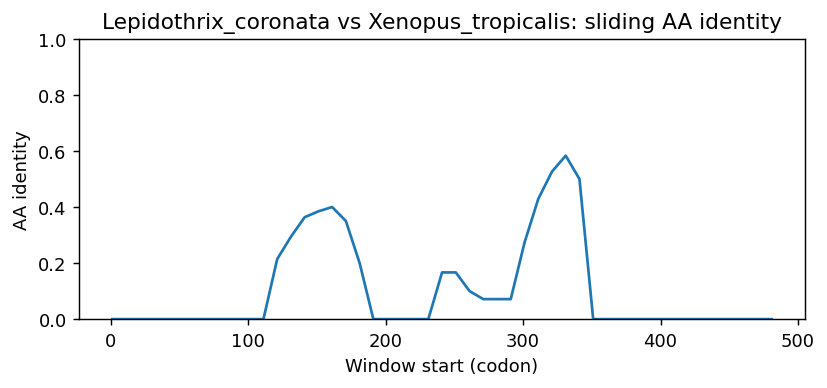
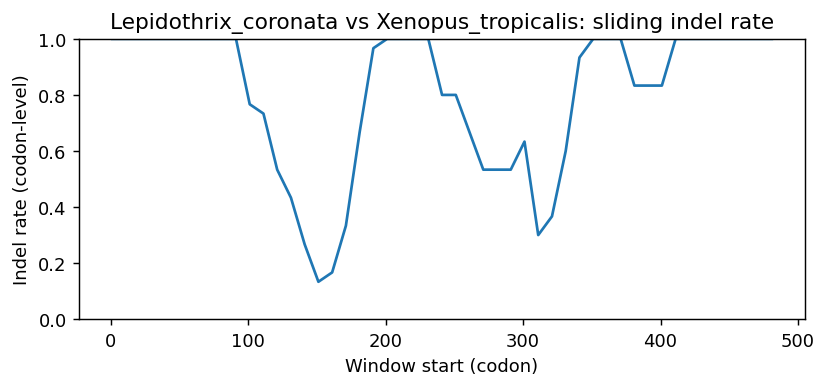
Lepidothrix_coronata vs Hyperolius_riggenbachi
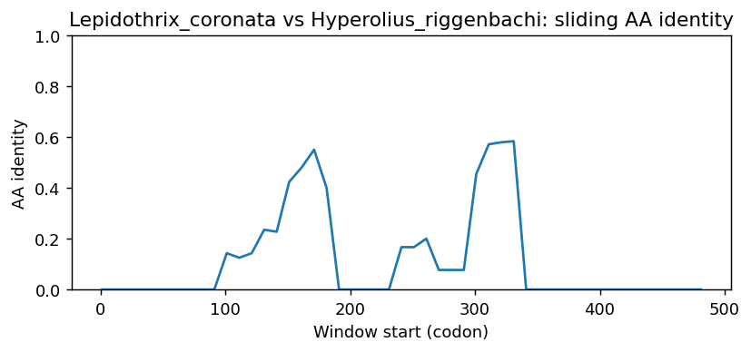
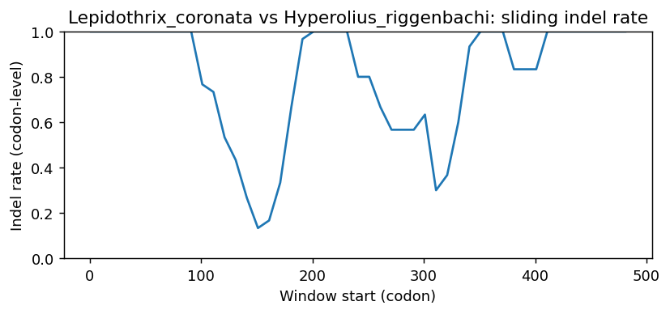
Lepidothrix_coronata vs Spea_bombifrons
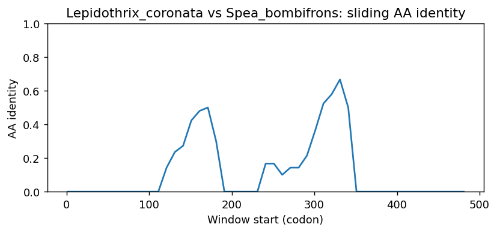
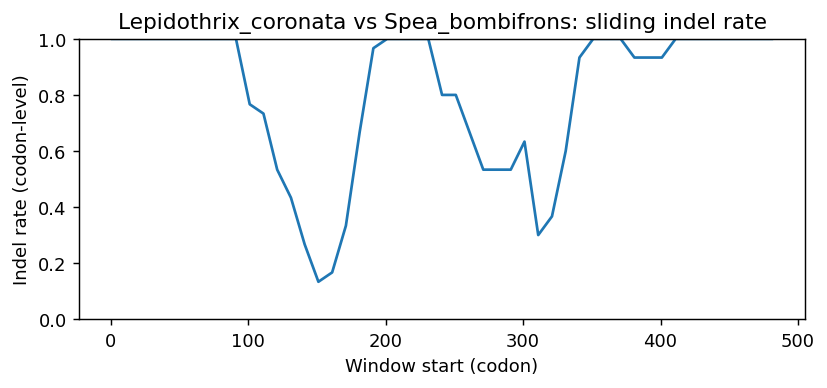
Lepidothrix_coronata vs Condylura_cristata
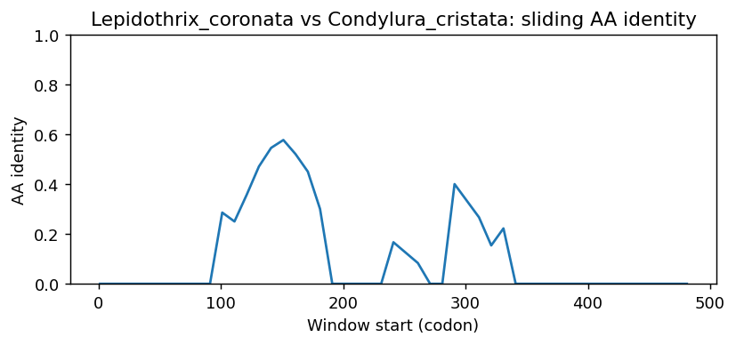
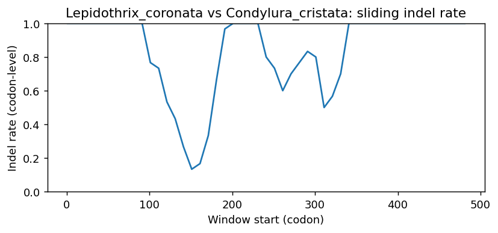
Lepidothrix_coronata vs Bufo_gargarizans
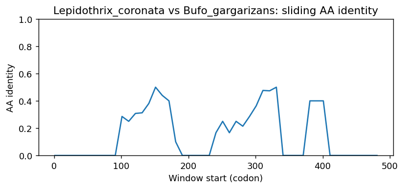
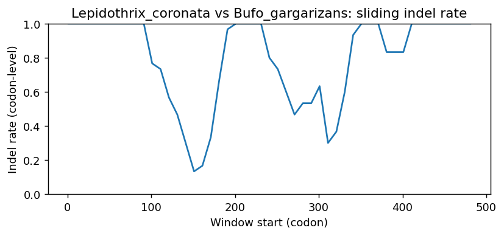
Lepidothrix_coronata vs Orycteropus_afer_afer
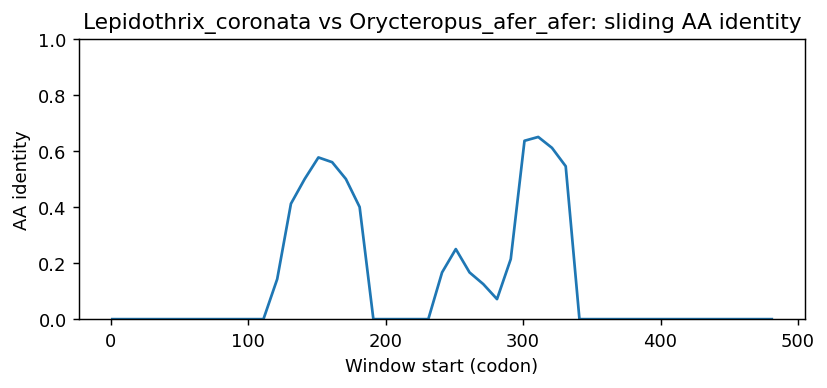
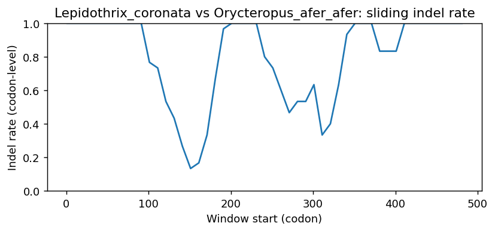
Methods (brief)
- CDS are translated (genetic code 1); proteins aligned by MAFFT when available, otherwise a progressive global aligner (BLOSUM62). Protein MSA is back-translated into a codon MSA.
- Pairwise metrics: AA/NT identities on aligned nongap positions; Ts/Tv; single-hit syn/nonsyn counts; gap events and largest contiguous gap cluster (codons); sliding-window AA identity and codon-level indel rate.
- Per-sequence diagnostics: GC content/skew, CpG density, AA low-complexity fraction via SEG-like entropy windows (win=12, H<2.2), and NT tandem repeats (homopolymers =5; di-nt =4 copies; tri-nt =3 copies).
- Correlations: Pearson/Spearman between AA identity and |GC difference|, mean AA LCR fraction, and mean NT repeat fraction across pairs.
- Risk classifier: combines identity, coverage, longest identical block, low-ID windows, max indel cluster, and up-ranks risk when mean LCR =0.25 or mean repeat =0.10 (soft-masking can remove seeds and reduce sensitivity).
Artifacts: pairwise_metrics.csv, per_sequence_composition.csv, correlations.csv, alignment_protein.faa, alignment_codon.fna.